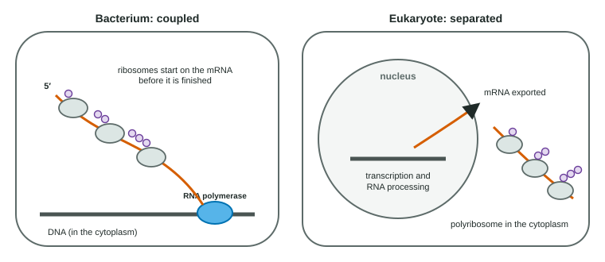

An mRNA is a message written in four letters. A protein is a chain built from twenty kinds of amino acid. Translation is the step that turns one into the other, on ribosomes, using tRNAs as interpreters. This page covers the code itself, the machinery, the three stages, how bacteria and eukaryotes differ, and why the code tells us something about the history of life.
The code is read in codons
Four bases taken one at a time could name only 4 amino acids; two at a time, 16. Three at a time gives 4 × 4 × 4 = 64 combinations, enough for 20 amino acids. Each group of three mRNA nucleotides is a codon. The ribosome reads codons one after another, 5′ to 3′, without gaps or overlaps.
The full key from codons to amino acids is the genetic code, usually shown as a codon table. You do not need to memorize it; the exam gives one when it is needed. Three features matter:
- Start codon: AUG, which codes for methionine, marks where translation begins. So most new polypeptides start with methionine (it is often trimmed off later).
- Stop codons: UAA, UAG and UGA code for no amino acid; they end the chain.
- Redundant but not ambiguous: most amino acids have more than one codon (leucine has six), but each codon means only one thing. Codons for the same amino acid often differ only in the third base.
| Amino acid | Codons (mRNA, 5′ to 3′) |
|---|---|
| Methionine (start) | AUG |
| Tryptophan | UGG |
| Phenylalanine | UUU, UUC |
| Lysine | AAA, AAG |
| Proline | CCU, CCC, CCA, CCG |
| Leucine | UUA, UUG, CUU, CUC, CUA, CUG |
| Stop | UAA, UAG, UGA |
The reading frame
Because codons are read in non-overlapping threes, the same letters can be grouped three ways. The start codon fixes the grouping, called the reading frame. Take 5′-GAUGCAUGCCAAAUGG…-3′. From the first AUG: AUG-CAU-GCC-AAA-UGG… (Met-His-Ala-Lys-Trp). From the second AUG, four bases later: AUG-CCA-AAU-GG… (Met-Pro-Asn…). Every codon after the start is different, because 4 is not a multiple of 3. Changes that add or remove bases have the same effect, as topic 6.7 shows.
Worked example: from mRNA to polypeptide. 5′-ACGAUGCCUUGGAAGUGCUAGCAU-3′.
Step 1. Find the first AUG: nucleotides 4-6. Step 2. Read in threes from there: AUG CCU UGG AAG UGC UAG. Step 3. Look up each codon: Met, Pro, Trp, Lys, Cys, stop. Answer: Met-Pro-Trp-Lys-Cys, five amino acids joined by four peptide bonds. ACG before the start and CAU after the stop are not translated.
The machinery
![A ribosome on an mRNA reading 5-prime AUG GCU UGG AAA CAC UAG 3-prime. The small subunit lies below the mRNA and the large subunit above. The E site over AUG holds an empty tRNA that is leaving; the P site over GCU holds the alanine tRNA, anticodon CGA, carrying the chain Met-Ala; the A site over UGG holds a newly arrived tryptophan tRNA whose anticodon 3-prime ACC 5-prime pairs with UGG. The ribosome moves one codon at a time toward the 3-prime end. UAG is a stop codon with no matching tRNA; a release factor binds there. Inset: an aminoacyl-tRNA synthetase attaches tryptophan to its tRNA, using ATP.](../figures/translation-ribosome.svg)
- tRNA is the adapter. One end carries an amino acid; a loop at the other end holds the anticodon, three bases that pair with a codon. The anticodon is complementary and antiparallel to its codon: codon 5′-UGG-3′, anticodon 3′-ACC-5′.
- Aminoacyl-tRNA synthetases are the real translators. Each recognizes one amino acid and the tRNAs that carry it, and joins them using energy from ATP, giving a charged tRNA. If the wrong amino acid were attached, the ribosome would insert it anyway, because the ribosome checks only codon-anticodon pairing.
- The ribosome has a small subunit, which binds the mRNA, and a large subunit, which joins the amino acids. Each subunit is made of ribosomal RNA and proteins, and the RNA of the large subunit forms the peptide bonds. It has three sites for tRNAs: the A site (where a new charged tRNA arrives), the P site (which holds the tRNA carrying the growing chain) and the E site (where the empty tRNA exits) (Figure 1).
Three stages
- Initiation. The small subunit binds the mRNA (in eukaryotes at the 5′ cap) and moves to the start codon, carrying the methionine tRNA. The large subunit joins, with the methionine tRNA in the P site. Energy comes from GTP.
- Elongation. A charged tRNA whose anticodon matches the codon in the A site binds there. The ribosome forms a peptide bond, transferring the chain from the P-site tRNA to the amino acid on the A-site tRNA. The ribosome then moves one codon toward the 3′ end: the empty tRNA shifts to the E site and leaves, the chain-carrying tRNA moves to the P site, and the A site is open. The chain grows from its amino end to its carboxyl end.
- Termination. When a stop codon reaches the A site, no tRNA matches it. A protein release factor binds instead, the chain is released, and the subunits separate.
Several ribosomes can read the same mRNA at once, each a little behind the one before. The string of ribosomes is a polyribosome (polysome), and it lets a cell make many copies of a protein quickly from one mRNA.
Worked example: counting. A protein has 300 amino acids. Its coding region has 300 codons (the start codon codes for the first amino acid) plus one stop codon: 301 × 3 = 903 nucleotides. The mature mRNA is longer still, because it also has stretches before the start codon and after the stop codon, plus the cap and tail.
Bacteria and eukaryotes

A bacterium has no nucleus, so ribosomes can attach to the 5′ end of an mRNA while RNA polymerase is still making the rest of it: coupled transcription and translation (Figure 2). In eukaryotes, the RNA must be finished and processed in the nucleus first.
| Prokaryotes | Eukaryotes | |
|---|---|---|
| Where transcription happens | Cytoplasm | Nucleus |
| RNA processing | Little: no cap, no long tail, introns rare | 5′ cap, poly-A tail, splicing |
| Where translation happens | Cytoplasm, on mRNA still being made | Cytoplasm (free ribosomes) and rough ER |
| Timing | Coupled | Separated in space and time |
| Shared | The genetic code, tRNAs, ribosomes with A, P and E sites, the start codon AUG, polyribosomes | |
Replication, transcription and translation side by side
| Replication | Transcription | Translation | |
|---|---|---|---|
| Template | Both DNA strands | One DNA strand of a gene | mRNA |
| Product | DNA | RNA | Polypeptide |
| Main machinery | DNA polymerase (and helicase, primase, ligase) | RNA polymerase | Ribosome, tRNAs, synthetases |
| Read in units of | One base | One base | Codons of three bases |
| Starts at | Origin of replication | Promoter | Start codon (AUG) |
| Ends at | End of the DNA, or where forks meet | Terminator or end signal | Stop codon |
| Where, in eukaryotes | Nucleus | Nucleus | Cytoplasm and rough ER |
Sending proteins to the rough ER
All translation starts on free ribosomes in the cytoplasm. A protein that will be secreted, or put into a membrane or a lysosome, begins with a signal peptide: a stretch of about 15-30 mostly nonpolar amino acids at its amino end. As the signal peptide comes out of the ribosome, a recognition particle binds it and docks the ribosome on the rough ER. The chain is threaded into the ER as it is made, and the signal peptide is usually cut off there. This is how the secretory pathway of topic 2.1 begins. If the ER is supplied only after a chain is finished, the chain is not taken in.
A nearly universal code
Bacteria, plants, fungi and animals all use the same codon assignments, with a handful of small exceptions (for example in mitochondria, where UGA codes for tryptophan instead of stop). This universal genetic code is why a human gene put into bacteria gives the human protein. An arbitrary code that every lineage shares is best explained by inheritance from a common ancestor that already used it.
Retroviruses: running the dogma backward
A retrovirus such as HIV carries its genes as RNA. Inside a host cell, its enzyme reverse transcriptase copies that RNA into DNA (reverse transcription), and the DNA is inserted into the host's own DNA. From then on the host cell transcribes the viral genes and translates the viral mRNA like its own. Several HIV drugs block reverse transcriptase.
Common mistakes
- "Every codon codes for an amino acid." Three are stop codons.
- "Anticodons are on the mRNA." Codons are on mRNA; anticodons are on tRNA.
- "The ribosome attaches the amino acid to the tRNA." Synthetases do that; the ribosome joins amino acids to the chain.
- "Translation happens in the nucleus." In eukaryotes it happens in the cytoplasm, on free ribosomes and the rough ER.